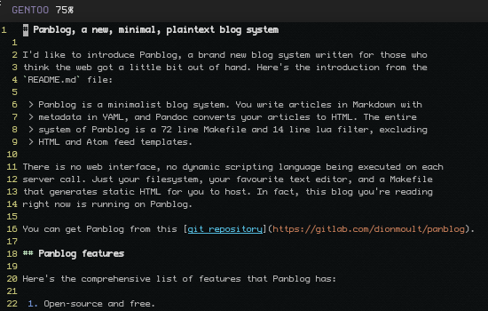

I'd like to introduce Panblog, a brand new blog system written for those who
think the web got a little bit out of hand. Here's the introduction from the
README.md file:
Panblog is a minimalist blog system. You write articles in Markdown with metadata in YAML, and Pandoc converts your articles to HTML. The entire system of Panblog is a 72 line Makefile and 14 line lua filter, excluding HTML and Atom feed templates.
There is no web interface, no dynamic scripting language being executed on each server call. Just your filesystem, your favourite text editor, and a Makefile that generates static HTML for you to host. In fact, this blog you're reading right now is running on Panblog.
You can get Panblog from this git repository or this Gitlab mirror.
Panblog features
Here's the comprehensive list of features that Panblog has:
- Open-source and free.
- Extremely lightweight. In fact, it's only 86 lines of code!
- Super-duper fast. Your generated blog is static HTML. No server language required.
- Plaintext post editing in Markdown.
- Supports showing a "Latest 10 posts" or similar on your homepage.
- Supports an archived list of all articles.
- Supports generation of Atom feeds.
- Custom HTML templates for fancy webdesigns.
- Supports post comments using the fediverse.
- Awesome SEO optimisation with semantic HTML, meta tags and description
Panblog allows you to use your favourite editor like vim. Do you want
versioned posts, editing from any computer, secure logins, and multiple author
access? No worries! Use git! Do you want search functionality? Cool,
Panblog's default template comes with DuckDuckGo search. Hate Markdown? Sure,
write in LaTeX, textile, rst, docx, or even html directly. Panblog supports
whatever pandoc does, which is a lot.
Panblog demo
Here's a screenshot of me writing this post in Panblog! I'm using vim, if
that matters.

Panblog is so small that you can just open up the Makefile and read what it
does. But for the initiatively challenged, here's a summary.
$ vim articles/my-article/article.md
$ vim articles/my-article/metadata.yaml
$ make all
This'll convert your article to weblog/my-article.html. If you have any links like [another article](../another-article/article.md) it'll automagically make the links work in HTML.
You can also run some other commands like:
$ make articles # Regenerate all article HTML
$ make article name=my-article # Regenerate a single article
$ make archive # Update your article archive page
$ make index # Update your home page with 10 latest posts
$ make feed # Update your Atom feed
Oh, and you can also migrate from Wordpress to Panblog using this Wordpress to Panblog migration script. No guarantees it'll work with your Wordpress setup, though, but it may help.
Does it have bugs?
Yes. I'm not a shell guru, and it's heavily underengineered. Pull requests are welcome.
Can panblog do XYZ?
If you're the type of person who would use Panblog, you're the type of person who is able to edit 100 lines of code and make it do what you want.
For example, the thinkMoult blog source shows some fancy additions, such as a 42 line addition to generate a gopher website.